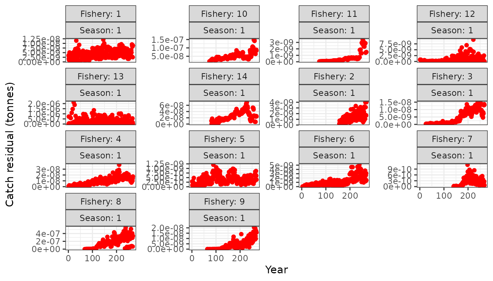

The BET model
bet.RmdIntroduction
The opal package is an R package that contains example
fisheries data from western and central pacific bigeye tuna (BET). This
page provides examples using the opal BET model.
Load inputs
Load the opal package and the RTMB
dependency. The ggplot2 package is used for plotting.
The bundled data object wcpo_bet_data contains all
biological parameters, catch and CPUE observations, length structure,
and prior specifications needed for the BET assessment model:
data(wcpo_bet_data)
data <- wcpo_bet_data
names(data)
#> [1] "age_a" "n_age" "n_season" "n_fishery"
#> [5] "len_bin_start" "len_bin_width" "n_len" "first_yr"
#> [9] "last_yr" "years" "n_year" "first_yr_catch"
#> [13] "catch_units_f" "cpue_switch" "cpue_data" "A1"
#> [17] "A2" "lw_a" "lw_b" "maturity"
#> [21] "fecundity" "M" "catch_obs_ysf" "sel_type_f"
#> [25] "priors"Key dimensions of the data:
cat("Number of ages:", data$n_age, "\n")
#> Number of ages: 40
cat("Number of years:", data$n_year, "\n")
#> Number of years: 268
cat("Number of fisheries:", data$n_fishery, "\n")
#> Number of fisheries: 15
cat("Number of length bins:", data$n_len, "\n")
#> Number of length bins: 95Biological inputs
Natural mortality at age, maturity at length, and length-weight parameters are all contained in the data object.
ages <- data$age_a
real_age <- ages / 4
# Natural mortality
ggplot(data.frame(age = real_age, M = data$M), aes(x = age, y = M)) +
geom_line() + geom_point() +
labs(x = "Age (years)", y = "M (quarterly rate)",
title = "Natural Mortality-at-Age")
# Maturity at length
len_mid <- seq(data$len_bin_start + data$len_bin_width / 2,
by = data$len_bin_width, length.out = data$n_len)
ggplot(data.frame(length = len_mid, maturity = data$maturity),
aes(x = length, y = maturity)) +
geom_line() + geom_point() +
labs(x = "Length (cm)", y = "Maturity",
title = "Maturity-at-Length")
Model setup
Parameters
Define the initial parameter values. Growth parameters
(log_L1, log_L2, log_k,
log_CV1, log_CV2) and selectivity
(par_sel) are initialised at reasonable starting values.
Load these from the bundled wcpo_bet_parameters data
object:
data(wcpo_bet_parameters)
parameters <- list(
log_B0 = 20,
log_h = as.numeric(wcpo_bet_parameters$log_h),
log_sigma_r = as.numeric(wcpo_bet_parameters$log_sigma_r),
log_cpue_q = as.numeric(wcpo_bet_parameters$log_cpue_q),
cpue_creep = as.numeric(wcpo_bet_parameters$cpue_creep),
log_cpue_tau = log(0.1),
log_cpue_omega = as.numeric(wcpo_bet_parameters$log_cpue_omega),
log_L1 = as.numeric(wcpo_bet_parameters$log_L1),
log_L2 = as.numeric(wcpo_bet_parameters$log_L2),
log_k = as.numeric(wcpo_bet_parameters$log_k),
log_CV1 = as.numeric(wcpo_bet_parameters$log_CV1),
log_CV2 = as.numeric(wcpo_bet_parameters$log_CV2),
par_sel = as.matrix(wcpo_bet_parameters$par_sel),
rdev_y = as.numeric(wcpo_bet_parameters$rdev_y)
)Priors
Priors are specified using get_priors(). The data object
already contains prior center values for growth parameters:
data$priors <- get_priors(parameters = parameters, data = data)
evaluate_priors(parameters = parameters, priors = data$priors)
#> [1] 92393.12Parameter map
Use RTMB’s map option to turn parameters on/off.
Parameters mapped to factor(NA) are fixed at their initial
values:
map_sel <- matrix(NA, nrow(parameters$par_sel), ncol(parameters$par_sel))
map_rdev <- rep(NA, length(parameters$rdev_y))
map <- list(
# log_B0 = factor(NA),
log_h = factor(NA),
log_sigma_r = factor(NA),
# log_cpue_q = factor(NA),
cpue_creep = factor(NA),
log_cpue_tau = factor(NA),
log_cpue_omega = factor(NA),
# rdev_y = as.factor(map_rdev),
par_sel = as.factor(map_sel),
log_L1 = factor(NA),
log_L2 = factor(NA),
log_k = factor(NA),
log_CV1 = factor(NA),
log_CV2 = factor(NA)
)Build the AD object
Using the data, the parameters, the
parameter map, and the model (opal_model), the
AD object is created using RTMB’s MakeADFun function:
obj <- MakeADFun(func = cmb(opal_model, data), parameters = parameters, map = map)
unique(names(obj$par))
#> [1] "log_B0" "log_cpue_q" "rdev_y"
obj$fn()
#> [1] 584.7051
obj$gr()
#> outer mgc: 665.2478
#> [,1] [,2] [,3] [,4] [,5] [,6] [,7]
#> [1,] 1.065922 665.2478 -11.68096 -14.26557 -9.81417 -9.900868 -18.71891
#> [,8] [,9] [,10] [,11] [,12] [,13] [,14]
#> [1,] -13.77988 -14.17164 -17.70791 -16.9681 -8.044774 -8.034375 -26.97926
#> [,15] [,16] [,17] [,18] [,19] [,20] [,21]
#> [1,] -11.25757 -19.30693 -17.35314 -10.87147 -6.712221 -15.98444 -20.82175
#> [,22] [,23] [,24] [,25] [,26] [,27] [,28]
#> [1,] -9.324704 -13.85078 -11.57353 -9.001889 -6.908133 -7.295254 -9.13823
#> [,29] [,30] [,31] [,32] [,33] [,34] [,35]
#> [1,] -11.06084 -14.21884 -8.488221 -9.58546 -10.41193 -12.4764 -6.413628
#> [,36] [,37] [,38] [,39] [,40] [,41] [,42]
#> [1,] -14.54504 -9.898263 -7.958596 -10.75903 -9.054115 -20.837 -8.206194
#> [,43] [,44] [,45] [,46] [,47] [,48] [,49]
#> [1,] -7.912243 -10.42431 -16.06861 -7.699976 -6.801717 -8.802698 -7.197453
#> [,50] [,51] [,52] [,53] [,54] [,55] [,56]
#> [1,] -7.915582 -7.489077 -10.26043 -6.903141 -7.89138 -15.25283 -5.352987
#> [,57] [,58] [,59] [,60] [,61] [,62] [,63]
#> [1,] -5.567669 -6.362258 -4.749596 -4.471054 -4.594404 -3.931069 -8.938181
#> [,64] [,65] [,66] [,67] [,68] [,69] [,70]
#> [1,] -3.611164 -3.232485 -3.336969 -4.525529 -2.453666 -2.192784 -2.178357
#> [,71] [,72] [,73] [,74] [,75] [,76] [,77]
#> [1,] -2.645582 -2.072859 -2.193959 -2.041077 -2.126055 -3.110924 -1.593746
#> [,78] [,79] [,80] [,81] [,82] [,83] [,84]
#> [1,] -1.445331 -1.125861 -0.7254851 -2.872688 -0.3907576 -3.413878 -1.394002
#> [,85] [,86] [,87] [,88] [,89] [,90] [,91]
#> [1,] -1.648394 -2.018129 -2.494717 -2.839109 -3.505909 -3.459283 -3.212223
#> [,92] [,93] [,94] [,95] [,96] [,97] [,98]
#> [1,] -3.050008 -3.096186 -2.748742 -2.427447 -2.189574 -2.000979 -2.113387
#> [,99] [,100] [,101] [,102] [,103] [,104] [,105]
#> [1,] -1.652702 0.3145913 0.8716859 3.946002 3.114384 -1.533977 3.269662
#> [,106] [,107] [,108] [,109] [,110] [,111] [,112]
#> [1,] 0.6328272 0.8256297 -2.099231 1.608665 1.026931 2.566182 2.792205
#> [,113] [,114] [,115] [,116] [,117] [,118] [,119] [,120]
#> [1,] -0.822488 8.302374 3.491446 6.548473 8.105699 2.206211 3.548908 8.747349
#> [,121] [,122] [,123] [,124] [,125] [,126] [,127] [,128]
#> [1,] 4.971096 4.273207 16.45161 0.928629 -0.3643806 0.3071737 8.733235 11.31333
#> [,129] [,130] [,131] [,132] [,133] [,134] [,135] [,136]
#> [1,] 4.086772 15.309 -0.9101051 0.6788307 2.387828 2.658945 2.135988 1.507292
#> [,137] [,138] [,139] [,140] [,141] [,142] [,143] [,144]
#> [1,] 7.580945 1.414192 -0.8449018 -2.075111 13.81066 2.384396 1.538312 4.934111
#> [,145] [,146] [,147] [,148] [,149] [,150] [,151]
#> [1,] 0.8910841 1.821192 2.144028 5.473371 1.353118 1.028252 -0.06050599
#> [,152] [,153] [,154] [,155] [,156] [,157] [,158] [,159]
#> [1,] 6.267656 2.32815 7.820962 3.392073 4.048114 2.6852 4.448881 6.534874
#> [,160] [,161] [,162] [,163] [,164] [,165] [,166] [,167]
#> [1,] 3.271622 3.411703 1.261352 3.297143 2.022279 2.2163 0.114358 1.69346
#> [,168] [,169] [,170] [,171] [,172] [,173] [,174] [,175]
#> [1,] 6.948515 -2.123725 7.206173 3.237693 0.6126806 5.004738 4.098924 3.743549
#> [,176] [,177] [,178] [,179] [,180] [,181] [,182] [,183]
#> [1,] 3.604363 4.213614 3.422573 2.967526 1.278868 -0.03973641 17.22478 5.976636
#> [,184] [,185] [,186] [,187] [,188] [,189] [,190] [,191]
#> [1,] 9.444755 8.70074 1.173024 20.68735 10.47452 4.661198 4.416462 10.11543
#> [,192] [,193] [,194] [,195] [,196] [,197] [,198] [,199]
#> [1,] 0.3972701 7.527196 -1.368914 4.389852 2.39165 2.006611 5.430926 3.333966
#> [,200] [,201] [,202] [,203] [,204] [,205] [,206] [,207]
#> [1,] 9.744511 9.663859 16.08717 12.32187 10.20443 11.66942 3.55409 5.807566
#> [,208] [,209] [,210] [,211] [,212] [,213] [,214] [,215]
#> [1,] 3.534067 0.1003533 6.547505 22.37802 24.74362 24.08991 9.165729 19.60319
#> [,216] [,217] [,218] [,219] [,220] [,221] [,222] [,223]
#> [1,] 4.391456 13.90066 17.70927 11.70893 11.57438 3.023483 13.01983 1.725407
#> [,224] [,225] [,226] [,227] [,228] [,229] [,230] [,231]
#> [1,] 8.635011 7.032007 8.640161 11.72414 11.10801 10.23762 15.02209 4.805921
#> [,232] [,233] [,234] [,235] [,236] [,237] [,238] [,239]
#> [1,] 10.95535 7.057241 -0.9275546 8.241586 25.21266 6.545207 7.551524 1.040936
#> [,240] [,241] [,242] [,243] [,244] [,245] [,246] [,247]
#> [1,] 4.67883 6.355778 2.957266 16.30849 7.931503 2.613837 1.372477 4.075347
#> [,248] [,249] [,250] [,251] [,252] [,253] [,254] [,255]
#> [1,] 7.254716 4.450089 4.47676 4.941414 -0.5836441 7.161057 5.044268 4.503889
#> [,256] [,257] [,258] [,259] [,260] [,261] [,262] [,263]
#> [1,] 1.712293 10.44751 2.209245 4.487058 3.84472 2.070184 4.501197 0.5909219
#> [,264] [,265] [,266] [,267] [,268] [,269] [,270]
#> [1,] 1.316229 2.387588 -1.104535 -0.7036507 -2.285416 -2.101558 0.6256006Inspect initial model outputs:
plot(obj$report()$spawning_biomass_y, type = "l",
xlab = "Time step", ylab = "Spawning biomass (mt)",
main = "Initial spawning biomass trajectory")
plot_catch(data = data, obj = obj)
#> [1] "The maximum catch difference was: 1.10394466901198e-08"
Parameter bounds
Lwr <- rep(-Inf, length(obj$par))
Upr <- rep(Inf, length(obj$par))
Lwr[grep("log_B0", names(obj$par))] <- log(1)
Upr[grep("log_B0", names(obj$par))] <- log(exp(22))
Lwr[grep("log_cpue_q", names(obj$par))] <- log(0.1)
Upr[grep("log_cpue_q", names(obj$par))] <- log(10)
Lwr[grep("rdev_y", names(obj$par))] <- rep(-5, length(parameters$rdev_y))
Upr[grep("rdev_y", names(obj$par))] <- rep(5, length(parameters$rdev_y))
bounds <- data.frame(par = names(obj$par), lower = Lwr, upper = Upr)Optimisation
Optimise using the nlminb function, do it twice to be
sure to be sure (said with Irish accent):
control <- list(eval.max = 10000, iter.max = 10000)
opt <- nlminb(start = obj$par, objective = obj$fn, gradient = obj$gr,
hessian = obj$he, lower = Lwr, upper = Upr, control = control)
#> Warning in nlminb(start = obj$par, objective = obj$fn, gradient = obj$gr, :
#> NA/NaN function evaluation
#> Warning in nlminb(start = obj$par, objective = obj$fn, gradient = obj$gr, :
#> NA/NaN function evaluation
#> Warning in nlminb(start = obj$par, objective = obj$fn, gradient = obj$gr, :
#> NA/NaN function evaluation
#> Warning in nlminb(start = obj$par, objective = obj$fn, gradient = obj$gr, :
#> NA/NaN function evaluation
#> Warning in nlminb(start = obj$par, objective = obj$fn, gradient = obj$gr, :
#> NA/NaN function evaluation
opt <- nlminb(start = opt$par, objective = obj$fn, gradient = obj$gr,
hessian = obj$he, lower = Lwr, upper = Upr, control = control)
#> Warning in nlminb(start = opt$par, objective = obj$fn, gradient = obj$gr, :
#> NA/NaN function evaluation
max(obj$gr())Compare initial and estimated parameter values:
data.frame(init = unlist(parameters),
value = unlist(obj$env$parList(obj$env$last.par.best))) %>%
mutate(par = rownames(.)) %>%
left_join(bounds) %>%
head()
#> init value par lower upper
#> 1 20.00000000 14.13456135 log_B0 0.000000 22.000000
#> 2 -0.05129329 -0.05129329 log_h NA NA
#> 3 -0.51082562 -0.51082562 log_sigma_r NA NA
#> 4 0.00000000 -0.02404871 log_cpue_q -2.302585 2.302585
#> 5 0.00000000 0.00000000 cpue_creep NA NA
#> 6 -2.30258509 -2.30258509 log_cpue_tau NA NAInspect fitted CPUE and catch:
plot(data$cpue_data$value, col = 2, pch = 16,
xlab = "Time step", ylab = "CPUE", main = "CPUE: observed vs predicted")
lines(exp(obj$simulate()$cpue_log_obs), lwd = 2, col = "gray70")
lines(obj$report()$cpue_pred, lwd = 2)
sum(obj$report()$catch_pred_ysf - data$catch_obs_ysf)
#> [1] 0.9998741
plot_catch(data = data, obj = obj)
#> [1] "The maximum catch difference was: 2.12415216083173e-06"
plot_catch(data = data, obj = obj, plot_resid = TRUE)
#> [1] "The maximum catch difference was: 2.12415216083173e-06"
Inspect estimated spawning biomass trajectory:
plot(obj$report()$spawning_biomass_y, type = "l",
xlab = "Time step", ylab = "Spawning biomass (mt)",
main = "Estimated spawning biomass trajectory",
ylim = c(0, max(obj$report()$spawning_biomass_y) * 1.2))
Selectivity
Visualise the selectivity curves by fleet:
rep <- obj$report()
sel_fya <- rep$sel_fya
fleet_names <- c("F01_LL.NORTH", "F02_LL.US", "F03_LL.OFFSH",
"F04_LL.EQUAT", "F05_LL.WEST", "F06_LL.SOUTH", "F07_LL.AUS",
"F08_PS.ASSOC", "F09_PS.UNASS", "F10_DOM.MISC",
"F11_DOM.HL", "F12_JP.PS.N", "F13_JP.PL", "F14_EQ.PL",
"S01_INDEX")
sel_df <- expand.grid(fishery = 1:data$n_fishery, age = 1:data$n_age)
sel_df$selectivity <- sapply(1:nrow(sel_df), function(i) {
sel_fya[sel_df$fishery[i], 1, sel_df$age[i]]
})
sel_df$real_age <- sel_df$age / 4
sel_df$fleet_name <- fleet_names[sel_df$fishery]
ggplot(sel_df, aes(x = real_age, y = selectivity)) +
geom_line() +
facet_wrap(~fleet_name, ncol = 4) +
labs(x = "Age (years)", y = "Selectivity") +
ylim(0, 1)
Selectivity-at-Age by Fleet
Diagnostics
Check that all parameters are estimable using the
check_estimability function:
check_estimability(obj = obj)
#> outer mgc: 2.130348e+18
#> Error in `check_estimability()`:
#> ! Some gradients are high, please improve optimization and only then use `Check_Identifiable`Calculate standard deviations of all model parameters:
Report <- sdreport(obj)
#> outer mgc: 2.130348e+18
#> outer mgc: 4.296325
#> outer mgc: 5.563336
#> outer mgc: 2.155537e+18
#> outer mgc: 2.155537e+18
#> outer mgc: 1.710657e+18
#> outer mgc: 2.792839e+18
#> outer mgc: 1.656782e+18
#> outer mgc: 2.910186e+18
#> outer mgc: 1.597276e+18
#> outer mgc: 3.064106e+18
#> outer mgc: 1.521359e+18
#> outer mgc: 3.279405e+18
#> outer mgc: 1.460298e+18
#> outer mgc: 3.488138e+18
#> outer mgc: 1.372371e+18
#> outer mgc: 3.859093e+18
#> outer mgc: 1.303603e+18
#> outer mgc: 4.224489e+18
#> outer mgc: 1.231213e+18
#> outer mgc: 4.690617e+18
#> outer mgc: 1.181449e+18
#> outer mgc: 5.100197e+18
#> outer mgc: 1.096796e+18
#> outer mgc: 6.034067e+18
#> outer mgc: 1.025675e+18
#> outer mgc: 7.112092e+18
#> outer mgc: 9.478814e+17
#> outer mgc: 8.874361e+18
#> outer mgc: 9.301376e+17
#> outer mgc: 9.429865e+18
#> outer mgc: 8.593336e+17
#> outer mgc: 1.235536e+19
#> outer mgc: 8.378147e+17
#> outer mgc: 1.373092e+19
#> outer mgc: 8.116149e+17
#> outer mgc: 1.561164e+19
#> outer mgc: 8.308213e+17
#> outer mgc: 1.417936e+19
#> outer mgc: 7.763226e+17
#> outer mgc: 1.940777e+19
#> outer mgc: 7.529327e+17
#> outer mgc: 2.262918e+19
#> outer mgc: 7.252411e+17
#> outer mgc: 2.808168e+19
#> outer mgc: 7.449403e+17
#> outer mgc: 2.391647e+19
#> outer mgc: 6.670067e+17
#> outer mgc: 5.211681e+19
#> outer mgc: 6.189917e+17
#> outer mgc: 1.209889e+20
#> outer mgc: 5.657148e+17
#> outer mgc: 8.805438e+20
#> outer mgc: 5.514685e+17
#> outer mgc: 3.613392e+21
#> outer mgc: 4.722627e+17
#> outer mgc: 1.183724e+20
#> outer mgc: 4.237624e+17
#> outer mgc: 3.349524e+19
#> outer mgc: 3.793339e+17
#> outer mgc: 1.48128e+19
#> outer mgc: 3.504727e+17
#> outer mgc: 9.396998e+18
#> outer mgc: 3.042597e+17
#> outer mgc: 4.977054e+18
#> outer mgc: 2.696051e+17
#> outer mgc: 3.168257e+18
#> outer mgc: 2.361131e+17
#> outer mgc: 2.075289e+18
#> outer mgc: 2.077329e+17
#> outer mgc: 1.452752e+18
#> outer mgc: 1.769196e+17
#> outer mgc: 9.740933e+17
#> outer mgc: 1.492266e+17
#> outer mgc: 6.67168e+17
#> outer mgc: 1.280197e+17
#> outer mgc: 4.88789e+17
#> outer mgc: 1.142295e+17
#> outer mgc: 3.931708e+17
#> outer mgc: 1.004208e+17
#> outer mgc: 3.11961e+17
#> outer mgc: 8.783437e+16
#> outer mgc: 2.47641e+17
#> outer mgc: 7.725193e+16
#> outer mgc: 2.006178e+17
#> outer mgc: 6.763784e+16
#> outer mgc: 1.626884e+17
#> outer mgc: 5.741299e+16
#> outer mgc: 1.269238e+17
#> outer mgc: 4.763456e+16
#> outer mgc: 9.672089e+16
#> outer mgc: 3.8698e+16
#> outer mgc: 7.239523e+16
#> outer mgc: 3.163383e+16
#> outer mgc: 5.522499e+16
#> outer mgc: 2.491127e+16
#> outer mgc: 4.05196e+16
#> outer mgc: 1.986328e+16
#> outer mgc: 3.048655e+16
#> outer mgc: 1.648261e+16
#> outer mgc: 2.426345e+16
#> outer mgc: 1.410742e+16
#> outer mgc: 2.012437e+16
#> outer mgc: 1.204206e+16
#> outer mgc: 1.668227e+16
#> outer mgc: 1.042598e+16
#> outer mgc: 1.409783e+16
#> outer mgc: 9.124659e+15
#> outer mgc: 1.208311e+16
#> outer mgc: 8.113242e+15
#> outer mgc: 1.056257e+16
#> outer mgc: 7.071505e+15
#> outer mgc: 9.039775e+15
#> outer mgc: 6.134171e+15
#> outer mgc: 7.703193e+15
#> outer mgc: 5.281817e+15
#> outer mgc: 6.519588e+15
#> outer mgc: 4.501825e+15
#> outer mgc: 5.464316e+15
#> outer mgc: 3.653991e+15
#> outer mgc: 4.348382e+15
#> outer mgc: 2.893839e+15
#> outer mgc: 3.37662e+15
#> outer mgc: 2.282322e+15
#> outer mgc: 2.616448e+15
#> outer mgc: 1.929948e+15
#> outer mgc: 2.188008e+15
#> outer mgc: 1.630047e+15
#> outer mgc: 1.829157e+15
#> outer mgc: 1.436796e+15
#> outer mgc: 1.600687e+15
#> outer mgc: 1.325395e+15
#> outer mgc: 1.470312e+15
#> outer mgc: 1.254975e+15
#> outer mgc: 1.388372e+15
#> outer mgc: 1.092688e+15
#> outer mgc: 1.200678e+15
#> outer mgc: 8.869934e+14
#> outer mgc: 9.655363e+14
#> outer mgc: 6.98822e+14
#> outer mgc: 7.535183e+14
#> outer mgc: 5.284076e+14
#> outer mgc: 5.642932e+14
#> outer mgc: 3.743663e+14
#> outer mgc: 3.957096e+14
#> outer mgc: 2.684775e+14
#> outer mgc: 2.814454e+14
#> outer mgc: 2.047134e+14
#> outer mgc: 2.133559e+14
#> outer mgc: 1.652159e+14
#> outer mgc: 1.715026e+14
#> outer mgc: 1.397028e+14
#> outer mgc: 1.446013e+14
#> outer mgc: 1.269272e+14
#> outer mgc: 1.311767e+14
#> outer mgc: 1.207103e+14
#> outer mgc: 1.246531e+14
#> outer mgc: 1.165997e+14
#> outer mgc: 1.203491e+14
#> outer mgc: 1.084486e+14
#> outer mgc: 1.118175e+14
#> outer mgc: 9.735542e+13
#> outer mgc: 1.002265e+14
#> outer mgc: 8.358162e+13
#> outer mgc: 8.587301e+13
#> outer mgc: 6.744288e+13
#> outer mgc: 6.911628e+13
#> outer mgc: 5.150339e+13
#> outer mgc: 5.263022e+13
#> outer mgc: 3.842335e+13
#> outer mgc: 3.915781e+13
#> outer mgc: 2.791287e+13
#> outer mgc: 2.837491e+13
#> outer mgc: 2.052539e+13
#> outer mgc: 2.082246e+13
#> outer mgc: 1.515518e+13
#> outer mgc: 1.534751e+13
#> outer mgc: 1.161019e+13
#> outer mgc: 1.174164e+13
#> outer mgc: 9.245745e+12
#> outer mgc: 9.341098e+12
#> outer mgc: 7.610328e+12
#> outer mgc: 7.682969e+12
#> outer mgc: 6.40257e+12
#> outer mgc: 6.459589e+12
#> outer mgc: 5.444456e+12
#> outer mgc: 5.48994e+12
#> outer mgc: 4.527808e+12
#> outer mgc: 4.56307e+12
#> outer mgc: 3.643885e+12
#> outer mgc: 3.670123e+12
#> outer mgc: 2.842136e+12
#> outer mgc: 2.860827e+12
#> outer mgc: 2.257026e+12
#> outer mgc: 2.270691e+12
#> outer mgc: 1.897428e+12
#> outer mgc: 1.908257e+12
#> outer mgc: 1.818826e+12
#> outer mgc: 1.829204e+12
#> outer mgc: 1.686419e+12
#> outer mgc: 1.695732e+12
#> outer mgc: 1.551059e+12
#> outer mgc: 1.559354e+12
#> outer mgc: 1.3802e+12
#> outer mgc: 1.387316e+12
#> outer mgc: 1.224569e+12
#> outer mgc: 1.230735e+12
#> outer mgc: 1.026768e+12
#> outer mgc: 1.031632e+12
#> outer mgc: 887411514138
#> outer mgc: 891428576337
#> outer mgc: 778847125692
#> outer mgc: 782237634336
#> outer mgc: 757929216529
#> outer mgc: 761294577946
#> outer mgc: 680149502284
#> outer mgc: 683028146420
#> outer mgc: 612737232136
#> outer mgc: 615239535952
#> outer mgc: 536411472582
#> outer mgc: 538530510214
#> outer mgc: 4.62343e+11
#> outer mgc: 464140248025
#> outer mgc: 354225757659
#> outer mgc: 355496382503
#> outer mgc: 264500085500
#> outer mgc: 265385144489
#> outer mgc: 190026171748
#> outer mgc: 190619687953
#> outer mgc: 136756865137
#> outer mgc: 137161900368
#> outer mgc: 97981084873
#> outer mgc: 98252523931
#> outer mgc: 74395944158
#> outer mgc: 74593502673
#> outer mgc: 58061579074
#> outer mgc: 58210619322
#> outer mgc: 47362657922
#> outer mgc: 47482444593
#> outer mgc: 39798985706
#> outer mgc: 39896868003
#> outer mgc: 34427457924
#> outer mgc: 34510443507
#> outer mgc: 29638736030
#> outer mgc: 29709188864
#> outer mgc: 25695275887
#> outer mgc: 25756727074
#> outer mgc: 21066597585
#> outer mgc: 21115145661
#> outer mgc: 1.7239e+10
#> outer mgc: 17277796794
#> outer mgc: 14212755221
#> outer mgc: 14244339769
#> outer mgc: 12012416488
#> outer mgc: 12039581918
#> outer mgc: 9432433541
#> outer mgc: 9453050403
#> outer mgc: 7242462855
#> outer mgc: 7257794769
#> outer mgc: 5712522095
#> outer mgc: 5724485758
#> outer mgc: 4672024287
#> outer mgc: 4681917989
#> outer mgc: 3690723742
#> outer mgc: 3698400941
#> outer mgc: 2890468457
#> outer mgc: 2896285630
#> outer mgc: 2437180178
#> outer mgc: 2442057960
#> outer mgc: 2213700796
#> outer mgc: 2218228621
#> outer mgc: 2036331638
#> outer mgc: 2040462331
#> outer mgc: 1919699956
#> outer mgc: 1923543156
#> outer mgc: 1799128203
#> outer mgc: 1802727235
#> outer mgc: 1706800833
#> outer mgc: 1710307916
#> outer mgc: 1499698164
#> outer mgc: 1502738256
#> outer mgc: 1238619091
#> outer mgc: 1241085712
#> outer mgc: 981587246
#> outer mgc: 983525433
#> outer mgc: 768187957
#> outer mgc: 769742759
#> outer mgc: 555058860
#> outer mgc: 556161499
#> outer mgc: 364150030
#> outer mgc: 364852860
#> outer mgc: 243595589
#> outer mgc: 244062371
#> outer mgc: 168307810
#> outer mgc: 168630327
#> outer mgc: 127698337
#> outer mgc: 127939399
#> outer mgc: 111416277
#> outer mgc: 111623809
#> outer mgc: 105010539
#> outer mgc: 105207191
#> outer mgc: 100473962
#> outer mgc: 100667076
#> outer mgc: 90322135
#> outer mgc: 90493453
#> outer mgc: 77752123
#> outer mgc: 77897670
#> outer mgc: 63962303
#> outer mgc: 64081140
#> outer mgc: 51674803
#> outer mgc: 51772221
#> outer mgc: 41536896
#> outer mgc: 41614526
#> outer mgc: 32882250
#> outer mgc: 32941681
#> outer mgc: 28425187
#> outer mgc: 28476186
#> outer mgc: 26860803
#> outer mgc: 26909604
#> outer mgc: 25903359
#> outer mgc: 25950605
#> outer mgc: 25266027
#> outer mgc: 25312790
#> outer mgc: 23598462
#> outer mgc: 23642338
#> outer mgc: 20518342
#> outer mgc: 20556441
#> outer mgc: 17586631
#> outer mgc: 17619230
#> outer mgc: 14836602
#> outer mgc: 14863863
#> outer mgc: 12659022
#> outer mgc: 12682222
#> outer mgc: 11404880
#> outer mgc: 11426155
#> outer mgc: 10197685
#> outer mgc: 10216621
#> outer mgc: 8973884
#> outer mgc: 8990453
#> outer mgc: 7474901
#> outer mgc: 7488660
#> outer mgc: 5927490
#> outer mgc: 5938588
#> outer mgc: 4442664
#> outer mgc: 4450961
#> outer mgc: 3005631
#> outer mgc: 3011101
#> outer mgc: 1942377
#> outer mgc: 1945842
#> outer mgc: 1261445
#> outer mgc: 1263660
#> outer mgc: 856916.2
#> outer mgc: 858372.2
#> outer mgc: 704507.7
#> outer mgc: 705684.5
#> outer mgc: 677908.5
#> outer mgc: 679034.7
#> outer mgc: 750753.3
#> outer mgc: 752030.8
#> outer mgc: 866578.9
#> outer mgc: 868102.5
#> outer mgc: 922820.8
#> outer mgc: 924451.7
#> outer mgc: 864200.4
#> outer mgc: 865692.9
#> outer mgc: 750411.6
#> outer mgc: 751735.1
#> outer mgc: 632047
#> outer mgc: 633152.7
#> outer mgc: 470545.7
#> outer mgc: 471333.2
#> outer mgc: 343321.8
#> outer mgc: 343885.8
#> outer mgc: 247386.6
#> outer mgc: 247788.2
#> outer mgc: 185018.4
#> outer mgc: 185307.6
#> outer mgc: 155519.7
#> outer mgc: 155763.7
#> outer mgc: 152117.3
#> outer mgc: 152366.3
#> outer mgc: 142314.9
#> outer mgc: 142554.9
#> outer mgc: 123564.6
#> outer mgc: 123771.1
#> outer mgc: 100360.9
#> outer mgc: 100526.6
#> outer mgc: 85069.26
#> outer mgc: 85212.84
#> outer mgc: 65023.93
#> outer mgc: 65134.2
#> outer mgc: 47297.9
#> outer mgc: 47375.73
#> outer mgc: 39297.61
#> outer mgc: 39361.07
#> outer mgc: 40637.62
#> outer mgc: 40704.09
#> outer mgc: 44865.56
#> outer mgc: 44941.36
#> outer mgc: 49146.49
#> outer mgc: 49232.66
#> outer mgc: 48990.33
#> outer mgc: 49077.42
#> outer mgc: 39784.66
#> outer mgc: 39853.79
#> outer mgc: 30461.83
#> outer mgc: 30514.68
#> outer mgc: 22552.74
#> outer mgc: 22591.08
#> outer mgc: 16820.93
#> outer mgc: 16848.45
#> outer mgc: 13703.46
#> outer mgc: 13725.23
#> outer mgc: 13175.36
#> outer mgc: 13196.88
#> outer mgc: 12438.24
#> outer mgc: 12458.64
#> outer mgc: 10697.58
#> outer mgc: 10714.9
#> outer mgc: 8765.26
#> outer mgc: 8779.314
#> outer mgc: 7349.482
#> outer mgc: 7361.639
#> outer mgc: 5863.047
#> outer mgc: 5872.44
#> outer mgc: 4639.3
#> outer mgc: 4646.457
#> outer mgc: 3975.614
#> outer mgc: 3981.586
#> outer mgc: 3853.217
#> outer mgc: 3859.167
#> outer mgc: 3801.636
#> outer mgc: 3807.493
#> outer mgc: 3551.149
#> outer mgc: 3556.555
#> outer mgc: 3223.82
#> outer mgc: 3228.663
#> outer mgc: 2936.129
#> outer mgc: 2940.721
#> outer mgc: 2589.232
#> outer mgc: 2593.253
#> outer mgc: 2013.931
#> outer mgc: 2016.78
#> outer mgc: 1590.468
#> outer mgc: 1592.527
#> outer mgc: 1466.518
#> outer mgc: 1468.447
#> outer mgc: 1443.225
#> outer mgc: 1445.187
#> outer mgc: 1369.061
#> outer mgc: 1370.892
#> outer mgc: 1272.86
#> outer mgc: 1274.52
#> outer mgc: 1231.428
#> outer mgc: 1233.055
#> outer mgc: 1263.722
#> outer mgc: 1265.454
#> outer mgc: 1271.673
#> outer mgc: 1273.462
#> outer mgc: 1189.01
#> outer mgc: 1190.653
#> outer mgc: 1008.111
#> outer mgc: 1009.454
#> outer mgc: 882.4888
#> outer mgc: 883.6487
#> outer mgc: 651.9675
#> outer mgc: 652.7169
#> outer mgc: 436.349
#> outer mgc: 436.6783
#> outer mgc: 335.4562
#> outer mgc: 335.6685
#> outer mgc: 293.8545
#> outer mgc: 294.0846
#> outer mgc: 199.9242
#> outer mgc: 200.0563
#> outer mgc: 85.90603
#> outer mgc: 85.85117
#> outer mgc: 33.31877
#> outer mgc: 33.19615
#> outer mgc: 17.59587
#> outer mgc: 17.48443
#> outer mgc: 9.163233
#> outer mgc: 9.076578
#> outer mgc: 18.18635
#> outer mgc: 18.05288
#> outer mgc: 1.705982
#> outer mgc: 1.810472
#> outer mgc: 2.155537e+18
#> outer mgc: 2.155537e+18
#> outer mgc: 2.155537e+18
#> outer mgc: 2.155537e+18
#> outer mgc: 2.155537e+18
#> outer mgc: 2.155537e+18
#> outer mgc: 2.155537e+18
#> outer mgc: 2.155537e+18
#> outer mgc: 2.155537e+18
#> outer mgc: 2.155537e+18
#> outer mgc: 2.155537e+18
#> outer mgc: 2.155537e+18
#> outer mgc: 2.155537e+18
#> outer mgc: 2.155537e+18
#> outer mgc: 2.155537e+18
#> outer mgc: 2.155537e+18
#> outer mgc: 2.155537e+18
#> outer mgc: 2.155537e+18
#> outer mgc: 2.155537e+18
#> outer mgc: 2.155537e+18
#> outer mgc: 2.155537e+18
#> outer mgc: 2.155537e+18
#> outer mgc: 2.155537e+18
#> outer mgc: 2.155537e+18
#> outer mgc: 2.155537e+18
#> outer mgc: 2.155537e+18
#> outer mgc: 2.155537e+18
#> outer mgc: 2.155537e+18
#> outer mgc: 2.155537e+18
#> outer mgc: 2.155537e+18
#> outer mgc: 2.155537e+18
#> outer mgc: 2.155537e+18
#> outer mgc: 2.155537e+18
#> outer mgc: 2.155537e+18
#> outer mgc: 2.155537e+18
#> outer mgc: 2.155537e+18
#> outer mgc: 2.155537e+18
#> outer mgc: 2.155537e+18
#> outer mgc: 2.155537e+18
#> outer mgc: 2.155537e+18
#> outer mgc: 2.155537e+18
#> outer mgc: 2.155537e+18
#> outer mgc: 2.155537e+18
#> outer mgc: 2.155537e+18
#> outer mgc: 2.155537e+18
#> outer mgc: 2.155537e+18
#> outer mgc: 2.155537e+18
#> outer mgc: 2.155537e+18
#> outer mgc: 2.155537e+18
#> outer mgc: 2.155537e+18
#> outer mgc: 2.155537e+18
#> outer mgc: 2.155537e+18
#> outer mgc: 2.155537e+18
#> outer mgc: 2.155537e+18Simulation
The CPUE series is set up using RTMB’s OBS mechanism
inside the model, which allows simulation via
obj$simulate(). For example:
plot(log(data$cpue_data$value), col = 2, pch = 16,
xlab = "Time step", ylab = "log(CPUE)", main = "Observed vs simulated CPUE")
lines(log(obj$report()$cpue_pred), lwd = 2)
for (i in 1:5) lines(obj$simulate()$cpue_log_obs, col = "gray70")
One step ahead (OSA) residuals
OSA residuals are a replacement for Pearson residuals:
osa_cpue <- oneStepPredict(obj = obj, observation.name = "cpue_log_obs",
method = "oneStepGeneric", trace = FALSE)
qqnorm(osa_cpue$res)
abline(0, 1)